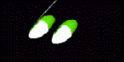

Navigation -
"Walk" (WALK)

Moves the viewer through the scene as if he would be walking.
If the floor is close enough, the viewer is placed on it.
COVERConfig
{
floorheight <position of the floor [mm]>
stepSize <step size [mm]>
}
You can even climb stairs.
Interaction:
like fly